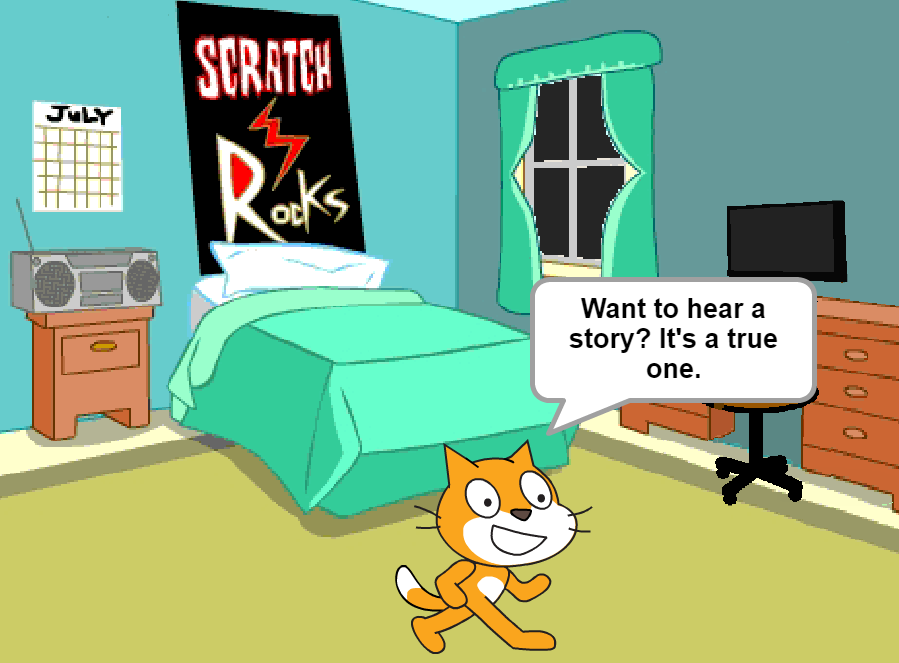
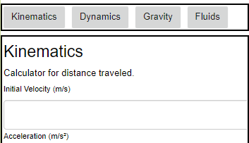
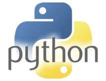

There comes a time when a man has to describe his scratch project and share a picture of it.
This project is a virtual piano that allows both clicking on the keys and using your keyboard.
Using signals in the code allows keys to be pressed rapidly with no delay before you can press it again.
There's also some music I made (with credit to Music Sheet Boss, whose videos I used as a guide.)
There comes another time when a man has to share his other scratch project. This one is a true story about something that happened to me one night. It's slightly abbreviated and animated. I am Batman.
My final project in App Inventor is a Physics calulator. Admittedly this is not a very versatile calculator. Not too useful, either. I had to keep the functionality and variety limited in order to develop it relatively quickly. Not something I'd regularly use for my physics class, but still, it's cool. Click the image below to download the .aia file and import it to App Inventor.
This is my first Python project. It was really quite fun to do, but very time consuming. It's an interactive fiction adventrure that takes place in the land of Mymar. I recommend opening the screen as wide as possible when you run it. Also, try not to misspell the first 3 questions. There's a small bug if you do. Not program-breaking, though.
